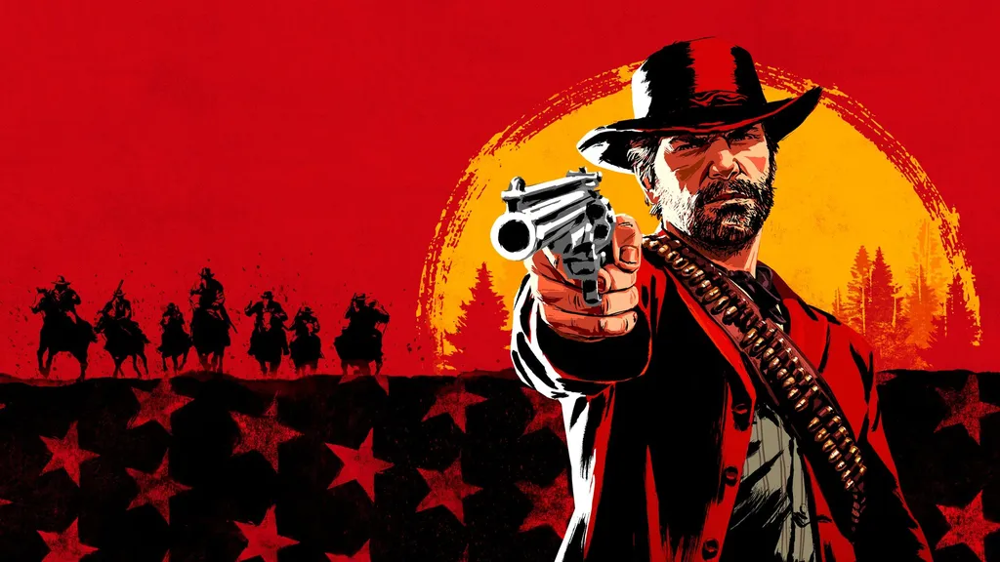

Simplesmente não conseguimos nos decidir entre as partes 1 e 2 de The Last of Us. O primeiro jogo foca muito mais na relação entre Ellie e Joel em um futuro pós-apocalíptico, tomado por zumbis e pela desordem — quase um simulador de pai triste —, enquanto o segundo é uma jornada trágica por vingança e violência. São dois jogos que se complementam, mas que são completamente diferentes em termos narrativos.
2. God of War
Todos nós conhecemos Kratos como um personagem sanguinário e mulherengo. Em God of War, de 2018, tudo isso muda: vemos um Kratos cansado, arrependido e tentando ensinar seu filho, Atreus, a ser um homem melhor do que ele foi. Após a morte de sua esposa, os dois viajam até o pico mais alto da montanha para jogar as cinzas dela ao vento — mas eles encontram muitos obstáculos pelo caminho.
3. The Witcher 3: Wild Hunt
O bruxo Geralt de Rívia ainda ficou mais conhecido pela série da Netflix, mas sua história começou mesmo com os livros do escritor polonês Andrzej Sapkowski. The Witcher 3: Wild Hunt talvez seja a melhor aventura do personagem até então. O jogo foi criado pela CD Projekt RED, numa época em que o estúdio ainda era conhecido por lançar jogos excelentes — e não o desastroso Cyberpunk 2077.
4. Red Dead Redemption 2

Red Dead Redemption 2 é um game que não deixa barato para qualquer filme de Hollywood. Desenvolvido pela Rockstar Games, o título recria de maneira deslumbrante o velho oeste com seu mundo aberto gigantesco, visuais incríveis, missões profundas e incontáveis atividades para se fazer. A inteligência artificial dos NPCs (personagens não jogáveis) também merece destaque: eles têm uma vida própria naquele universo e conseguem perceber, por exemplo, se nossas roupas estão sujas ou manchadas de sangue, o que muda o comportamento deles para conosco.
5. Bloodborne
Exclusivo para PlayStation, Bloodborne é produzido pelo game designer Hidetaka Miyazaki, da FromSoftware, o mesmo criador de Elden Ring e da série Souls — ou seja, espere um game muito desafiador. O jogador controla Hunter no antigo vilarejo de Yharnam, um lugar tomado por uma estranha doença endêmica que avassalou a população local com morte e loucura.
6. Grand Theft Auto V
Este jogo poderia estar na lista de melhores títulos de PS3, PS4 e, em breve, PS5. Sim, Grand Theft Auto V é excelente, e os motivos são vários: temos três protagonistas carismáticos (Franklin, Michael e Trevor), um mundo aberto repleto de atividades e uma história ousada e satírica, marca registrada da franquia.
7. Horizon Zero Dawn + Horizon Forbidden West
Neste RPG de ação e aventura exclusivo de PlayStation, o mundo foi dominado por máquinas modernas, gigantescas… e violentas. Apesar da tecnologia, a humanidade se viu obrigada a viver em tribos para sobreviver, todas com seus tabus. Um desses conservadorismos afeta Aloy, uma criança exilada por não ter mãe. Nós a acompanhamos ao longo dos anos tentando ser aceita pela comunidade e buscando respostas sobre o que aconteceu com o mundo — e de quem ela é.
8. Resident Evil 2 Remake
Se você era criança entre o fim dos anos 1990 e o início dos anos 2000, provavelmente se borrava de medo com Resident Evil 2. Na época, o jogo impressionava pela história, qualidade gráfica, trilha sonora e, é claro, pelos sustos; no PS4, tudo foi reimaginado, tornando-o muito mais envolvente, bonito e assustador.
9. Final Fantasy VII Remake
Um dos melhores jogos da franquia e da geração PS1, Final Fantasy VII ganhou um remake de respeito em 2020, que brilha com seus gráficos, animações, trilha sonora e narrativa reformuladas. A história acompanha um grupo de rebeldes que luta contra uma megacorporação, a qual está sugando toda a energia vital do planeta.